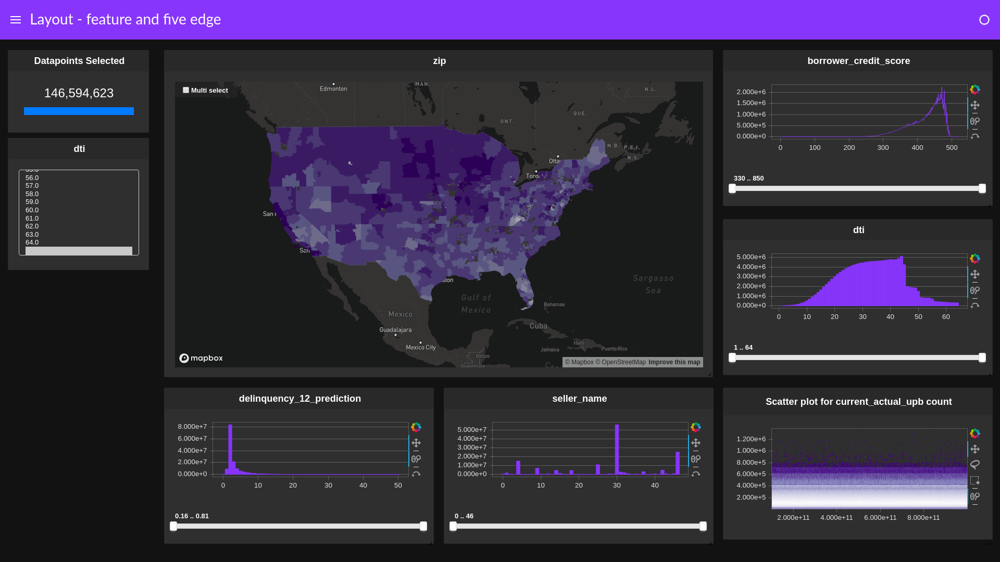

Layouts¶
Load cuxfilter and data¶
[ ]:
from cuxfilter import charts
import cuxfilter
from bokeh import palettes
cux_df = cuxfilter.DataFrame.from_arrow('./data/146M_predictions_v2.arrow')
Declare charts¶
[ ]:
#tile provider for choropleth map
MAPBOX_API_KEY= "pk.eyJ1IjoiYXRob3J2ZSIsImEiOiJjazBmcmlhYzAwYXc2M25wMnE3bGttbzczIn0.JCDQliLc-XTU52iKa8L8-Q"
chart0 = charts.choropleth(x='zip', y='delinquency_12_prediction', color_column='delinquency_12_prediction', color_aggregate_fn='mean',
geo_color_palette=palettes.Purples9, mapbox_api_key=MAPBOX_API_KEY,
geoJSONSource = 'https://raw.githubusercontent.com/rapidsai/cuxfilter/GTC-2018-mortgage-visualization/javascript/demos/GTC%20demo/public/data/zip3-ms-rhs-lessprops.json',
data_points=1000, nan_color='white')
chart1 = charts.bar('dti')
chart2 = charts.bar('delinquency_12_prediction',data_points=50)
chart3 = charts.line('borrower_credit_score', step_size=1)
chart4 = charts.bar('seller_name')
chart5 = charts.scatter(x='loan_id',y='current_actual_upb')
chart6 = charts.line('dti')
chart7 = charts.line('delinquency_12_prediction', data_points=50)
chart8 = charts.bar('borrower_credit_score', step_size=1)
chart_widget = charts.multi_select('dti')
#create a list of charts
charts_list = [chart_widget, chart0, chart3, chart1, chart2, chart4, chart5, chart6, chart7, chart8]
User-defined Layout Types¶
Cuxfilter 0.18 introduced custom user-defined layouts, which can be applied using an input parameter to the ``.dashboard()`` api, called ``layout_array``.¶
Layout array is a list-of-lists, representing a 2-dimensional layout page. Each list is mapped to an entire row of the layout. A list contains chart numbers (starting from 1 to n), representing their exact position on the page. The input array is automatically scaled to fit the entire screen.
Example 1:¶
layout_array = [[1]]
will result in a single chart occupying the entire page.
Example 2:¶
layout_array = [[1], [1], [2]]
will result chart 1 occupying the first two rows and chart 2 occupying the last row, roughly dividing the 2-chart layout to a 66%-33% ration.
Example 3:¶
[ ]:
d = cux_df.dashboard(charts_list, layout_array=[
[1, 1, 2, 2],
[1, 1, 3, 4]
], theme=cuxfilter.themes.rapids, title="Layout - Custom")
[39]:
await d.preview()
Predefined Layout Types¶
[ ]:
d = cux_df.dashboard(charts_list, layout=cuxfilter.layouts.single_feature, theme=cuxfilter.themes.rapids, title="Layout - single feature")
[13]:
await d.preview()
[ ]:
d = cux_df.dashboard(charts_list, layout=cuxfilter.layouts.feature_and_base, theme=cuxfilter.themes.rapids, title="Layout - feature and base")
[16]:
await d.preview()
[ ]:
d = cux_df.dashboard([chart_widget, chart0, chart1], layout=cuxfilter.layouts.double_feature, theme=cuxfilter.themes.rapids, title="Layout - double feature")
[7]:
await d.preview()
[ ]:
d = cux_df.dashboard(charts_list[:4], layout=cuxfilter.layouts.left_feature_right_double, theme=cuxfilter.themes.rapids, title="Layout - left feature right double")
[10]:
await d.preview()

[ ]:
d = cux_df.dashboard([chart_widget, chart1, chart2, chart3], layout=cuxfilter.layouts.triple_feature, theme=cuxfilter.themes.rapids, title="Layout - triple feature")
[22]:
await d.preview()
[ ]:
d = cux_df.dashboard([chart_widget, chart0, chart2, chart3], layout=cuxfilter.layouts.feature_and_double_base, theme=cuxfilter.themes.rapids, title="Layout - feature and double base")
[13]:
await d.preview()
[ ]:
d = cux_df.dashboard([chart_widget, chart0, chart2, chart3, chart4], layout=cuxfilter.layouts.two_by_two, theme=cuxfilter.themes.rapids, title="Layout - two by two")
[16]:
await d.preview()
[ ]:
d = cux_df.dashboard(charts_list, layout=cuxfilter.layouts.feature_and_triple_base, theme=cuxfilter.themes.rapids, title="Layout - feature and triple base")
[19]:
await d.preview()
[ ]:
d = cux_df.dashboard(charts_list, layout=cuxfilter.layouts.feature_and_quad_base, theme=cuxfilter.themes.rapids, title="Layout - feature and quad base")
[22]:
await d.preview()
[ ]:
d = cux_df.dashboard(charts_list, layout=cuxfilter.layouts.feature_and_five_edge, theme=cuxfilter.themes.rapids, title="Layout - feature and five edge")
[25]:
await d.preview()

[ ]:
d = cux_df.dashboard([chart_widget, chart3, chart1, chart2, chart4, chart5, chart6], layout=cuxfilter.layouts.two_by_three, theme=cuxfilter.themes.rapids, title="Layout - two by three")
[34]:
await d.preview()
[ ]:
d = cux_df.dashboard(charts_list, layout=cuxfilter.layouts.double_feature_quad_base,
theme=cuxfilter.themes.rapids, title="Layout - double feature quad base")
[28]:
await d.preview()
[ ]:
d = cux_df.dashboard(charts_list, layout=cuxfilter.layouts.three_by_three,
theme=cuxfilter.themes.rapids, title="Layout - three by three")
[31]:
await d.preview()
[ ]: